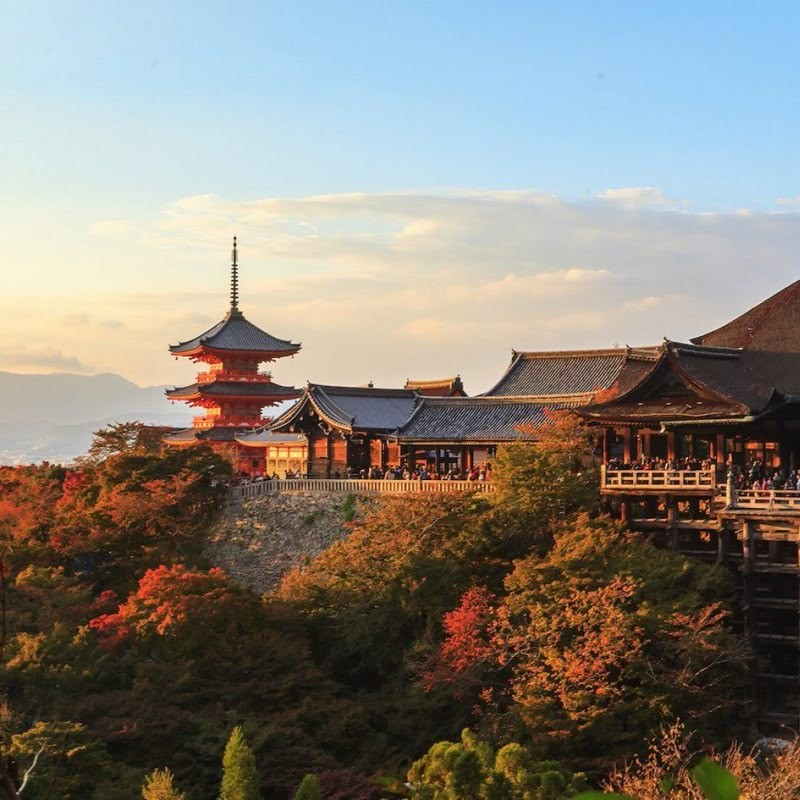
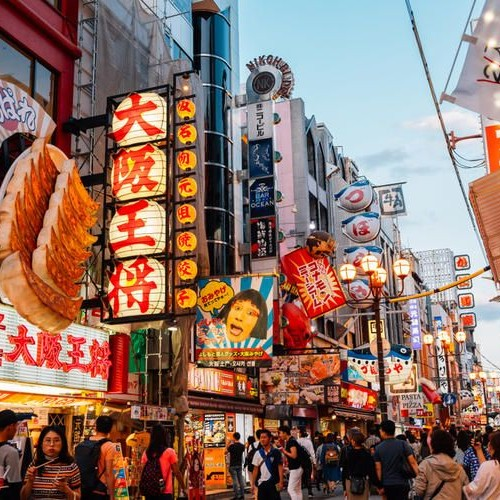
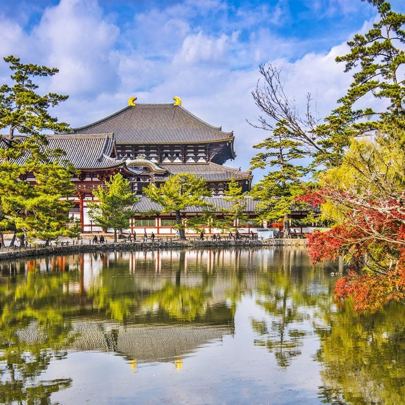

| Day | Morning | Afternoon | Evening | Food | Budget (USD) |
|---|---|---|---|---|---|
| Day 1 Tokyo |
Visit Sensoji Temple | Explore Asakusa & Nakamise Street | Tokyo Skytree observation deck | Breakfast at Komeda Coffee | $180 |
| Dinner at Ichiran Ramen | Lunch at local street food stalls | ||||
| Day 2 Tokyo Shibuya |
Shibuya Crossing & Hachiko Statue | Shopping in Shibuya Center Street | Walk in Yoyogi Park | Lunch at Genki Sushi | $200 |
| Evening in Shinjuku – Kabukicho lights | Dinner at Sushi Zanmai | ||||
| Day 3 Kyoto |
Visit Fushimi Inari Shrine | Walk through the Torii Gates | Explore Gion District | Lunch at Omen Udon | $220 |
| Kiyomizu-dera Temple & shopping street | Dinner at local Kyoto Kaiseki | ||||
| Day 4 Osaka |
Osaka Castle | Boat ride around the castle moat | Dotonbori night walk | Takoyaki street snacks | $210 |
| Visit Shinsekai + Tsutenkaku Tower | Dinner at Kushikatsu Daruma | ||||
| Day 5 Nara |
Nara Park – feed the deer | Todaiji Great Buddha Temple | Return to Osaka for evening | Lunch at Nara small cafés | $160 |
| Relax, shopping, free time | Dinner at Osaka local ramen shops | ||||
| Total Estimated Budget for Two: $970 (Includes food, metro passes, entrances, and local transport) | |||||
| Tokyo | Kyoto | Osaka | Nara |
|---|---|---|---|
|
Open in Google Maps 
|
Open in Google Maps  |
Open in Google Maps  |
Open in Google Maps  |